If programming graphical things, often funny things appear on the screen,
some of them have been captured and so I try to document the history in a graphical way.
It's just lovely to see the project growing from shot to shot.
(It is ordered from newest to oldest, so best is seen first)
Version 0.0.3, Full screen mode, with character animation and integrated map. (Shot at the conservatory of music in britain)
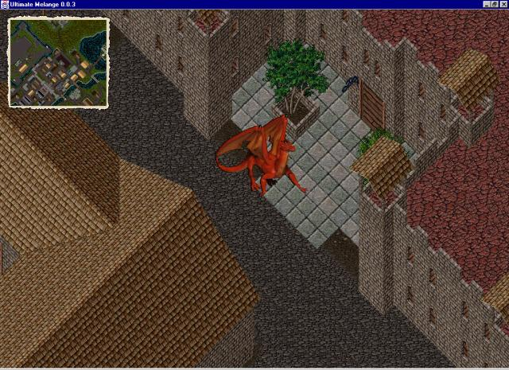
TEXTRA display mode: Britain park as you have never seen it before:
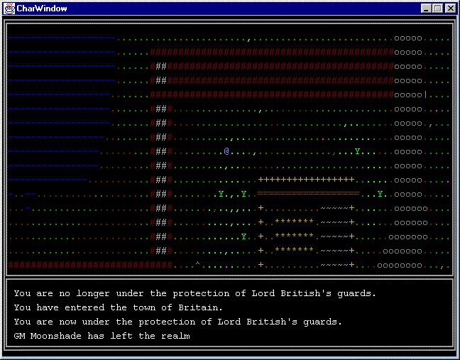
Introducing TEXTRA alternative display mode:
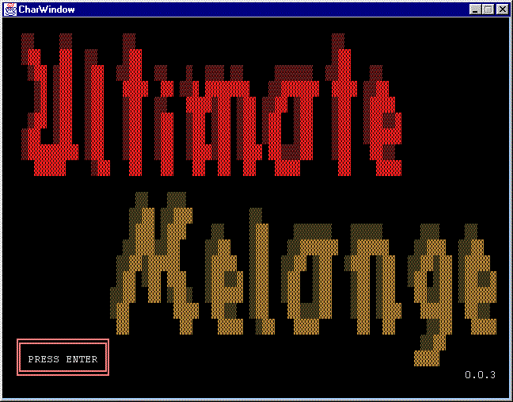
Version alpha-0.0.2, 99% of the screen is rendered right. (Shot at the entrance of blackthorns castle)
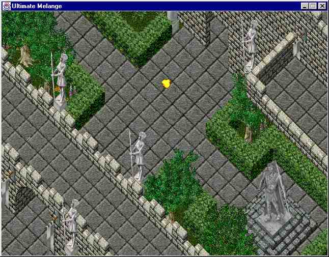
Ever seen Trammel and Felucca at once?
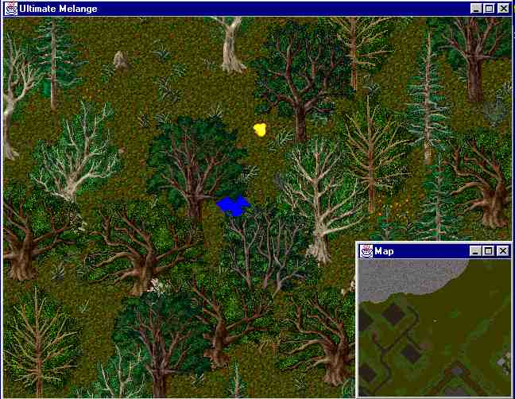
First static tiles, many wrongs to go... (Britain again)
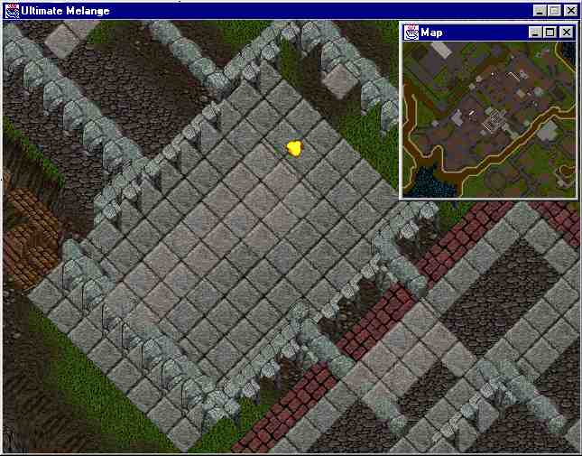
Version alpha-0.0.1, with map (shot in the center of Minoc, since always the center
of Britain starts to be boring)
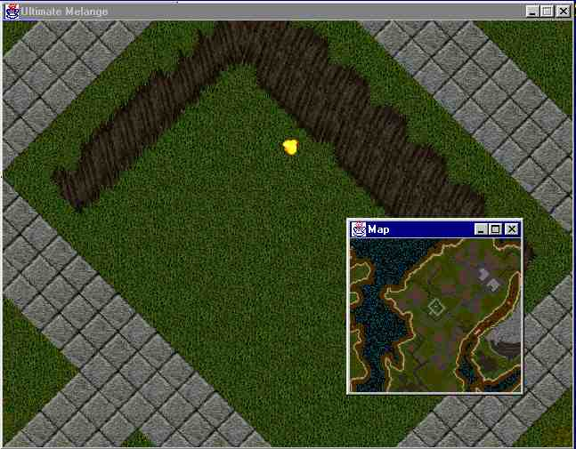
Fixed the gaps (almost).
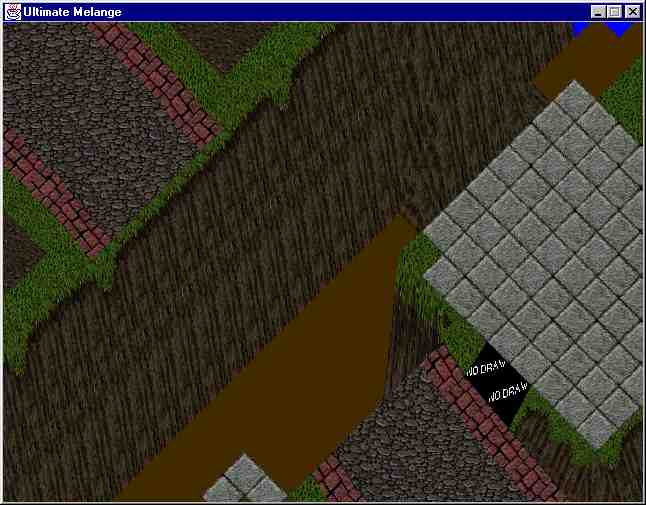
There are still two problems or so.
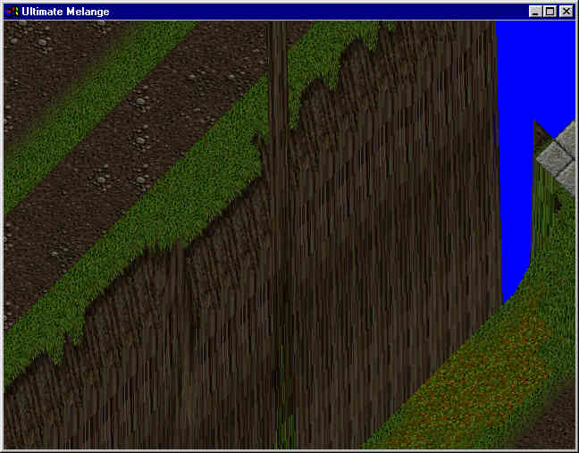
Ahh, finally found the solution to the stretch-o-tilt algorithm.
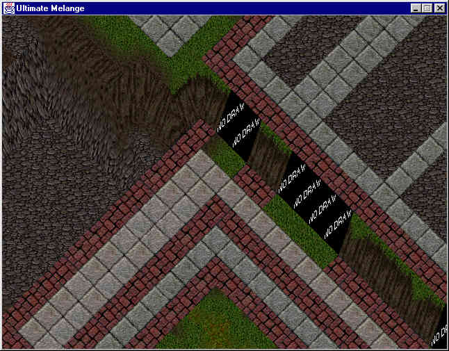
The horizontal side, makes the second part.
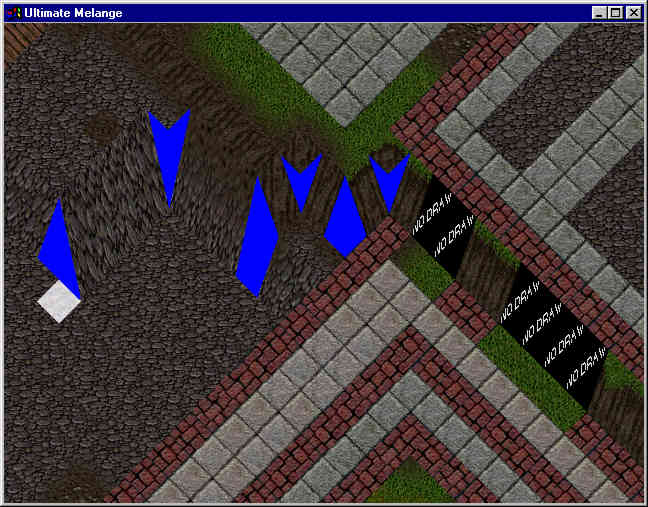
The first part of the solution.
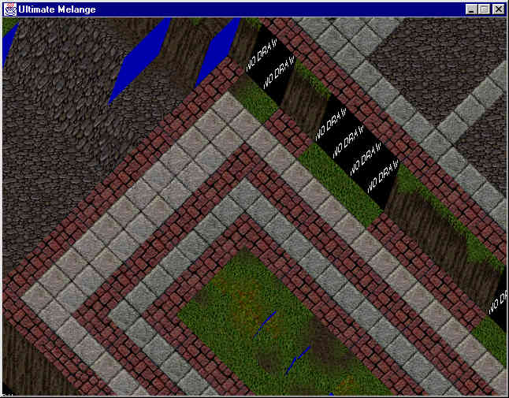
The big height mistery. How shall the gaps be filled?
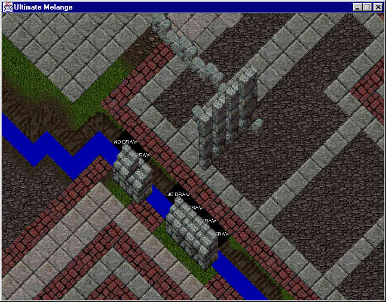
The first static tile and sprite...
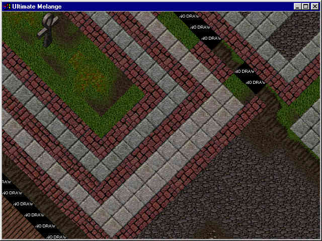
The very first screen, any similarity yet? Hmmmm no...
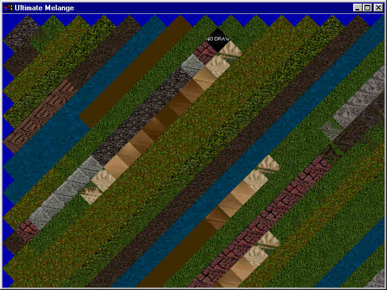